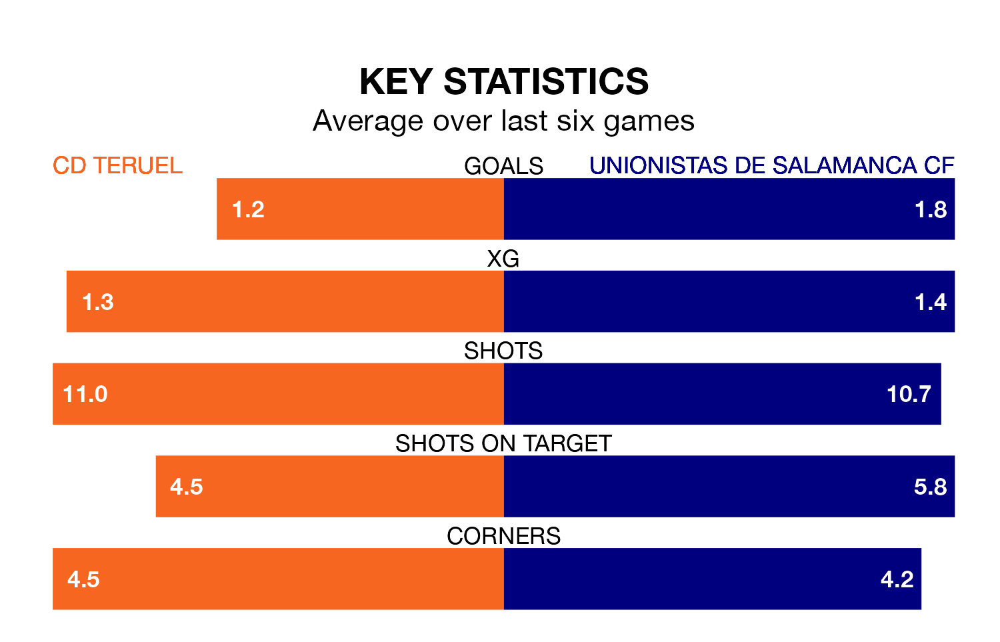

CD Teruel host Unionistas de Salamanca CF on Saturday at the Estadio La Pinila in Primera Division RFEF Group 1.
In their last league match, on April 27, Teruel drew with CF Fuenlabrada 0-0 away.
Unionistas de Salamanca won, 4-0 at home against CE Sabadell, with Borislav Ivaylov Stankov (three) and Jorge Rastrojo Moro on the scoresheet.
In Taliby Konate, Teruel can rely on one of the league's safest pair of hands. He has kept 10 clean sheets in his 23 appearances this season in Primera Division RFEF Group 1.
In Unionistas de Salamanca's net, Pablo Cacharrón Blanco has nine clean sheets in 19 games.
The home team are 16th in the table after 34 games, of which they have won six and drawn 18, earning 36 points.
The visitors are eight places ahead of Teruel in eighth, with 12 wins and 12 draws putting them on 48 points.
With 28 goals in 34 games so far this season, Teruel are scoring at below the league average rate with 0.8 goals per game. But they are conceding fewer than average too, letting in 35 goals at a rate of 1.0 per game.
Unionistas de Salamanca are also below average scorers, with 1.0 goal per game, compared to a league average of 1.1. They have conceded 0.8 goals per game.
The hosts are in mixed form in Primera Division RFEF Group 1, with two wins and three draws from their last six games.
With four wins and two losses over that period, Unionistas de Salamanca's form is better – they have taken 12 points from 18, compared to Teruel's nine.
Updated: 12:00 (UTC), 02/05/24